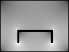
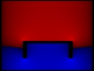

- Question: What is
atlc? - Answer:
atlcis a computer programme designed for finding the properties (characteristic impedance, inductance per m, capacitance per metre, velocity factor, electric field distribution) of any transmission line with 2 conductors. It used the finite difference method to determine these properties, so while slower than other methods, can handle any cross section.
- Question: Formulas for transmission line properties can be found in any decent book, so why would I want to use
atlc? - Answer: Formulas can be found for many simple cases, but often no analytical formula is known for more complex, but useful cases.
For example, many amateur radio valve amplifiers have a stripline transmission line, mounted above a chassis. The impedance of such a line can be calculated from published formula. However, these assume there is no metallic side walls for the amplifier, or a lid on top. Once these are added, there is no known analytical formula.
You may wish to make a transmission line out of available materials. For example, assume you have some U-section brass that you would like to use for the inner of a transmission line, with the outer being rectangular section brass. See the figure below, where the inner is shown red, the outer green and white is just vacuum.
The programme gives the following information about this transmission line.
Note, in the above images, it should not be assumed that somewhere that is twice as bright as someone else has twice the electric field. The perceived brightness depends on the non-linear characteristics of the human eye and the non-linear characteristics of how the CRT's brightness depends on the voltage levels applied to it. Quantitative data on electric field strengths are saved as binary files. See the HTML page on the file format if interested in using this data.Electrical characteristics
L=145.5810 nH/m
C=76.4283 pF/m
Zo= 43.6441Ohms
v= 299792458.010503 m/s  Total electric field
(white is higher)x-directed E-field,
Red in +x direction,
blue in -x direction.y-directed E-field.
Red in +y direction,
blue in -y direction.
- Question: When would using
atlcnot be a good idea? - Answer: If the geometry is simple and there are known analytical formula, it would generally be preferable to calculate them analystically. The only excepts would be cases where analytical evaluation is possible, but difficult
atlc. But generally, atlc is designed for the cases where there are no analytical results.
- Question: What are the hardware and software requirements for using
atlc? - Answer:A Unix computer, with a gcc or other C compiler is needed to run
atlc. Floating point support in hardware is strongly recommended. Hence a 486 or better PC is really needed, or perhaps a 386 with 387 floating point processor. Given the programme is fairly time consuming, I would suggest at least a 100 MHz machine, preferably a lot more. The programme should compile easily, as only the standard maths library is needed. If you have multiple processors, you can add multi-threaded support. If you wish to do this, you will need to have pthreads installed.atlchas been tested on a 350 MHz Pentium II PC with Red Hat Linux (release 6.1, kernel 2.2.12-98), a Sun SPARCstation 20 with Solaris 8 and 4 x 125 MHz HyperSPARC CPUs and a Sun Ultra 60 with dual 300 MHz processors. All CPUs were used on the Sun workstations. I've not tested multi-processor support on any other machine.
RAM requirements should not be excessive by today's standards, with 48 Mb sufficient for most problems. Using a very fine grid can push this into a few hundred Mb, but cpu speed will generally limit you before RAM
You will also need some graphics package such as Gimp, Photoshop, Windows Paint, CorelDraw etc, that can save images at bitmap (.BMP or .bmp) files. I would suggest using Gimp on the unix machine, but the Gimp graphics programme can run under Windows, unix, OS2, DOS, VMS or whatever operating system you like.
- Question:Who wrote
atlc? - Answer:
atlcwas written and is maintained by Dr. David Kirkby, drkirkby@ntlworld.com
- Question: Under what license conditions is
atlcreleased ? - Answer: It it issued under the GNU General Public Licence
- Question: Where can I download the latest version of
atlc? - Answer: Please download from SourceForge
- Question: How do I build
atlc? - Answer: Building is simple, basically requiring you to type
% gzip -d atlc-X.Y.Z.tar.gz
Where X.Y.Z is the version
% tar xv atlc-X.Y.Z.tar % cd atlc-X.Y.Z % ./configure % make % cd src % ./tests % su # make install
By default, the binaries are installed in /usr/local/bin and the man pages in /usr/local/man. I've not determined how to use autoconf or automake to put the html documents somewhere sensible, so you will have to do that by hand. You will need root access to install the files in /usr/local, but if you wish to install them elsewhere, you can do% ./configure --prefix=~ % make % cd atlc-X.Y.Z. % make install
to install off your home directory.
If you have access to a computer with multiple CPUs and you have software configured for threaded support, you can do enable support for the multiple processors, by running:% configure --with-mp % make % su # make install
The programme must be configured first without threaded support, as the tests will not complete proplerly otherwise. I would suggest you test a few examples without threaded support too, as this has not been tested on many machines. On my old quad CPU Sun SPARCstation 20, using a large bitmap (for best accuracy) results in about 80% utilisation of my 4 cpus, resulting in results that are around 2.4x faster than on one cpu. On my current machine, a dual processor Sun Ultra 60, it runs about 1.7x faster on 2 cpus. On small bitmaps, there is little or no advantage in running on multiple CPUs.
- Question: I wish to find the impedance of a microstrip line, on a printed circuit board, which is enclosed in a box. Can
atlccalculate the impedance of the transmission line with the two dielectrics - vacuum and the fibreglass PCB. - Answer: Yes, this is no problem, although I must admit the results of this have not been checked very much.
atlcis conveniently configured for the following dielectric constants - 1.0, 2.1 (PTFE), 2.3 (RT duriod 5880), 2.33 (Polyethylene), 2.5 (polystyrene), 3.3 (PVC), 3.335 (epoxy resin), 4.8 (fibreglass), 6.15 (duriod 6006) and 10.2 (duroid 6010). Any other permittivity can be defined, but needs slightly more effort in doing so.
- Question: Is it possible to calculate the properties of two coupled transmission lines, which form a directional coupler, with a view to calculate the properties of a directional coupler?
- Answer:When there are two coupled transmission lines, there is not a single characteristic impedance Zo, but instead an even-mode impedance Zeven and an odd-mode impedance Zodd. An odd-mode impedance is calculated when the two lines are driven out of phase and an even-mode impedance when they are driven in phase. Versions of
atlcfrom 4.0.0 onwards are able to calculate an even-mode impedance Zeven and an odd-mode impedance Zodd Zodd. However, directional couplers support is not complete yet, as you can not do multiple dielectrics or even a single dielectric other than vacuum.. .
- Question: How accurate is
atlc? - Answer:The basic method by which
atlcworks is very accurate. Errors of less than 0.3% are typical, and largest error every recorded is under 1%. The problem is that achieving such accuracy is very time consuming. Few people need results more accurate than 1%, in which case the run-times should be only a few minutes at most.
- Question: How does
atlcwork? - Answer:
atlcuses a method known as finite differences. A paper describing the theory of this was published in the amateur radio journal QEX See: Finding the characteristics of Arbitrary transmission lines, D. Kirkby, QEX, December 1996, page 3-10. You can download a copy if you wish, or there should be a a local copy
- Question: Bitmap files are large, can I use JPEG instead?
- Answer: No. JPEG files use a compression method that is not lossless -i.e. data is lost from which you can never recover. As such JPEG is not suitable for this application. TIFF could in principle be used, but there are no plans to add support for files other than .bmp. I might add support for the FITs data file format, but this is not a priority
- Question: Iwant to try a number of different transmission lines, all with rectangular cross sections. Drawing them as bitmaps is a bit tedious. Is there a simpler way?
- Answer: Yes, there is. The programme
rect_in_rectis for this purpose, as it can automatically draw bitmaps for a rectangular conductor inside another rectangular conductor, like the following transmission line.
You need to supply as command line arguments the dimensions of the structure (in mm, inches, miles or whatever you want, as long as the same unit is used throughout), and of course the permittivities of the dielectrics. See the section Automatic Bitmap Generators for more information onrect_in_rect.
- Question: I ran rect_in_rect with the -v option, so that it produced some extra information to stderr. rect_in_rect indicated that it would create a grid of 615 x 201, yet the bitmap was larger at 625 x 211 pixels. Why is this ?
- Answer: The dimensions you enter on rect_in_rect's command line are the inside dimensions of the outer conductor, which you enter as floating point numbers. rect_in_rect will convert those to the best integer fit it can, but it least have at least a 1 pixel border all the way around for the outer conductor. By default, the border is made 5 pixels, so it can be seen easily on a bitmap without needing to zoom in too far. Hence the bimap is 10 pixels wider and 10 pixel higher than expected.